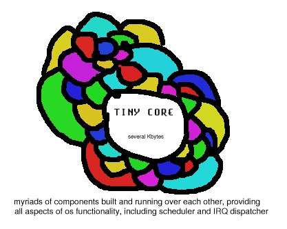

| Odin OS: Design and Implementation | ||
|---|---|---|
| <<< Previous | Next >>> | |
Small, reliable, portable, distributed, real-time operating platform.
Based on an object oriented language with notion of 'interfaces': parts that allow objects to inter-operate regardless of their internal implementation.
An implementation language that itself can express very high level abstractions while being simple and can produce effectively optimized code. (e.g. Oberon/Lagoona?)
System is built out of myriads of such small components, that every one only does a little function, falling under some specific category, and does it way too well. All components interact by means of interfaces. There can be
marshalling primitives integrated into an OS at bottom level,
transparent proxy components that will do marshalling for procedures on the other side of the Net.

Configurability (management of dynamism).
code distribution over wide-area networks to allow pushing or pulling new components when available, and
safe dynamic reconfiguration so we can plug in new components when desired.
| <<< Previous | Home | Next >>> |
| Odin OS: Design and Implementation | Ways to achieve goals |